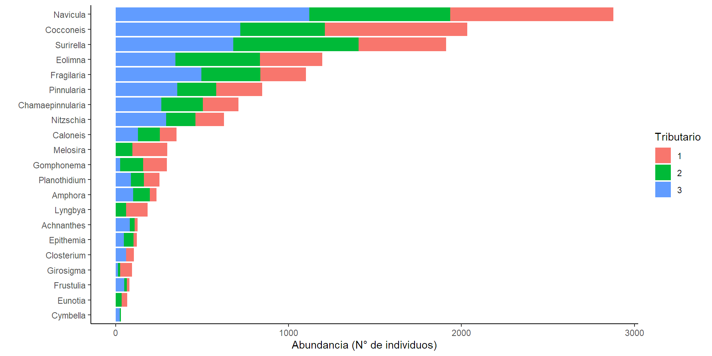
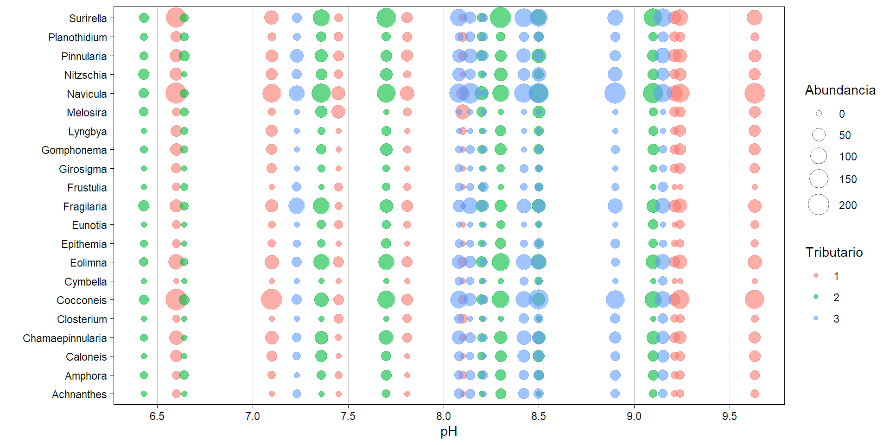
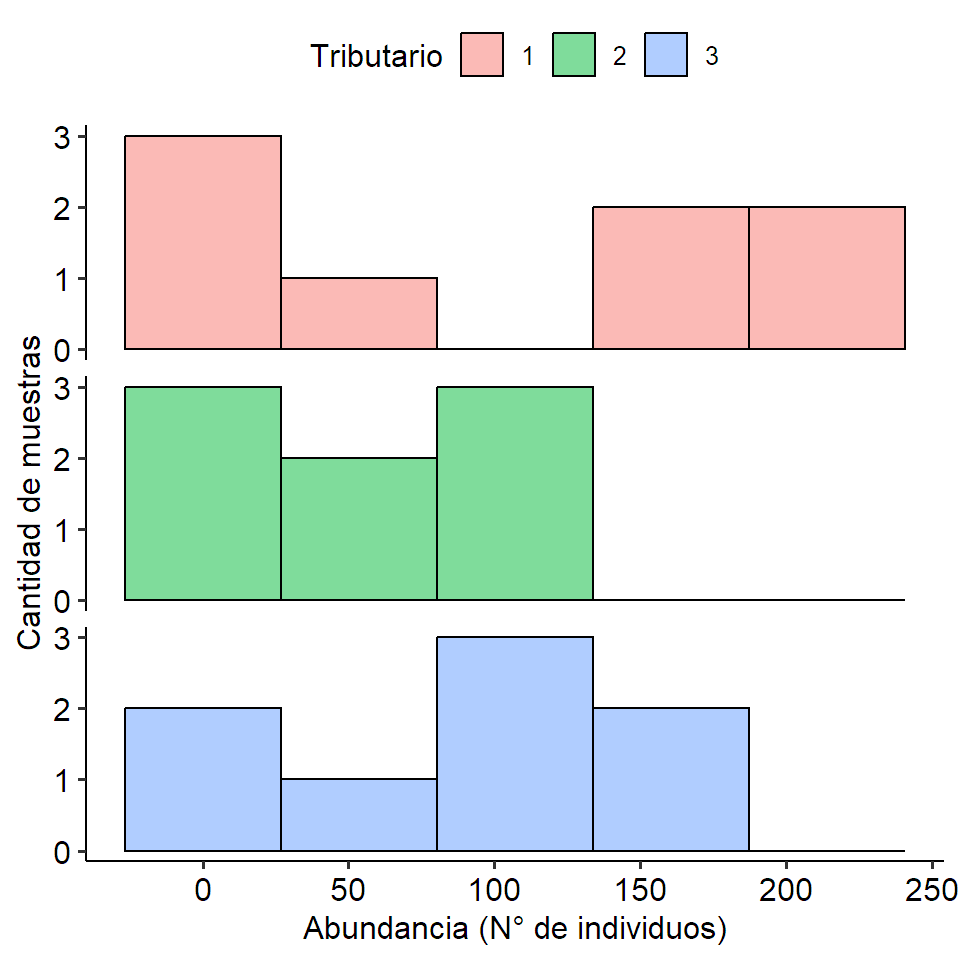
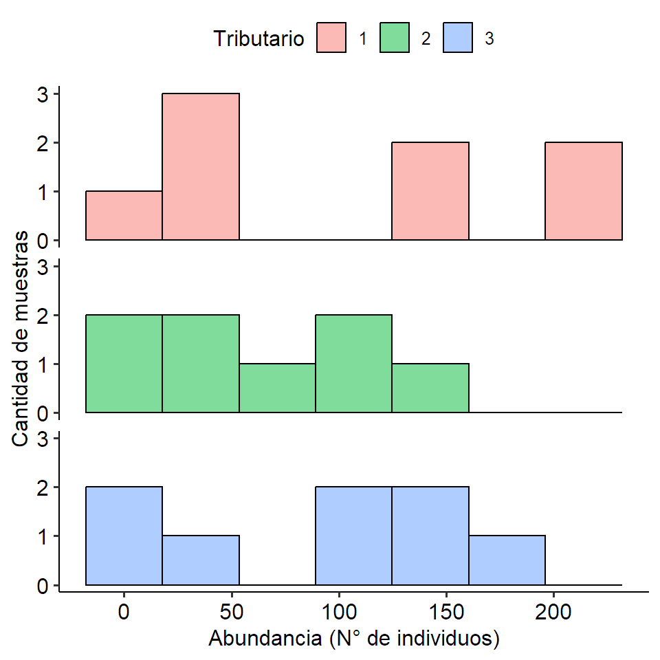
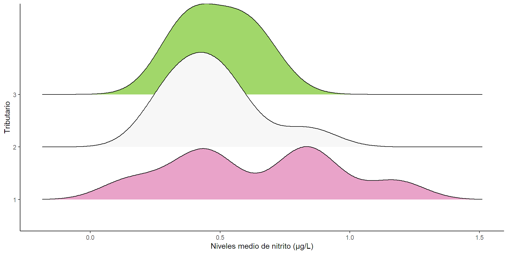
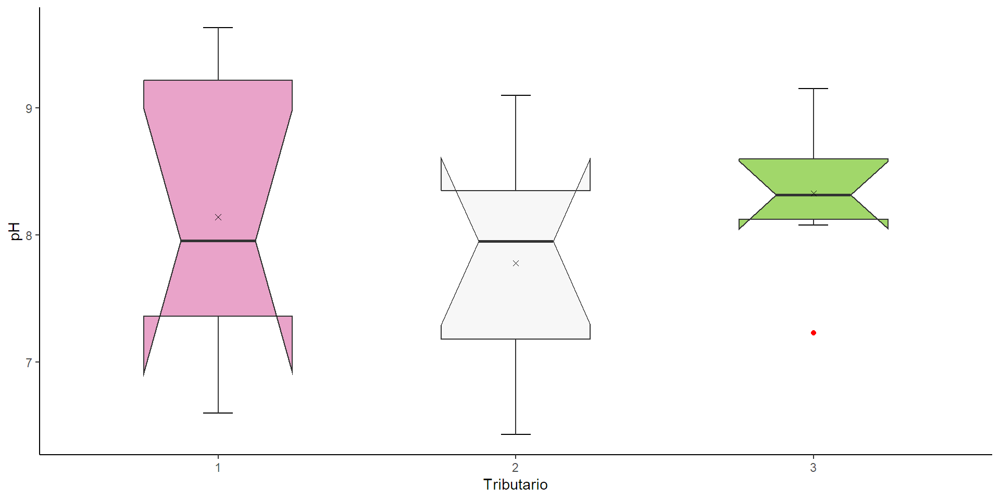
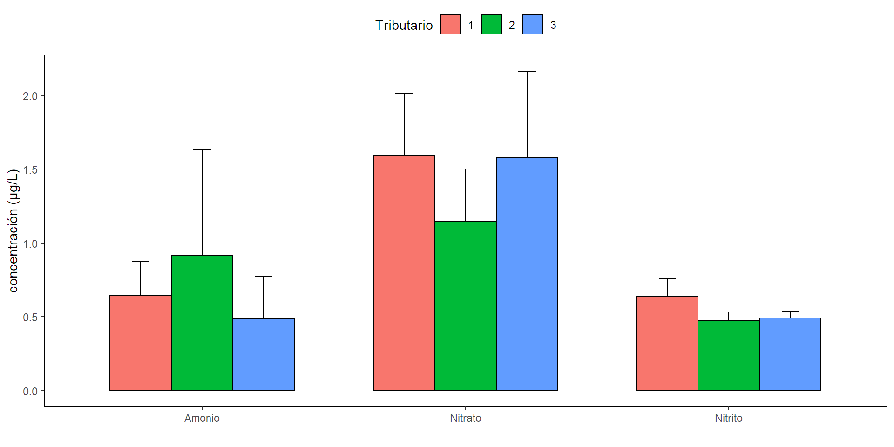
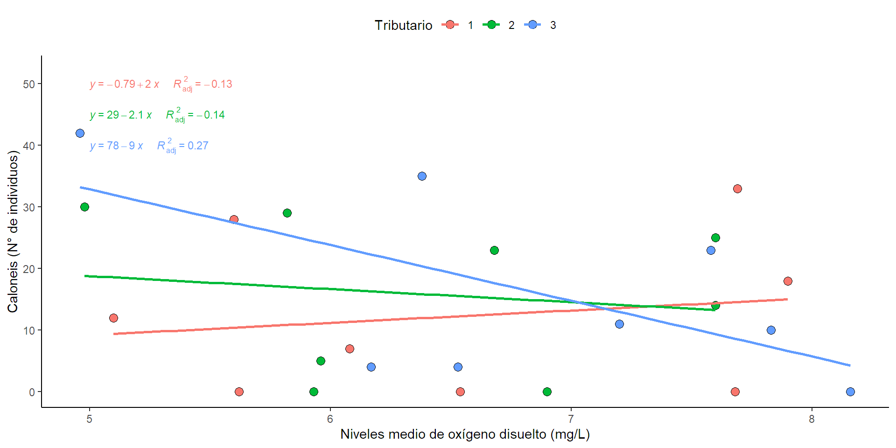
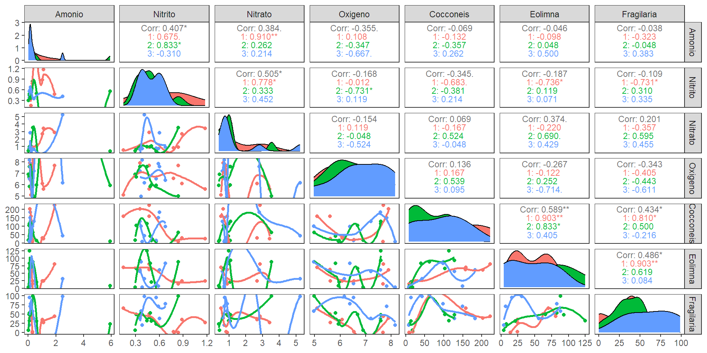
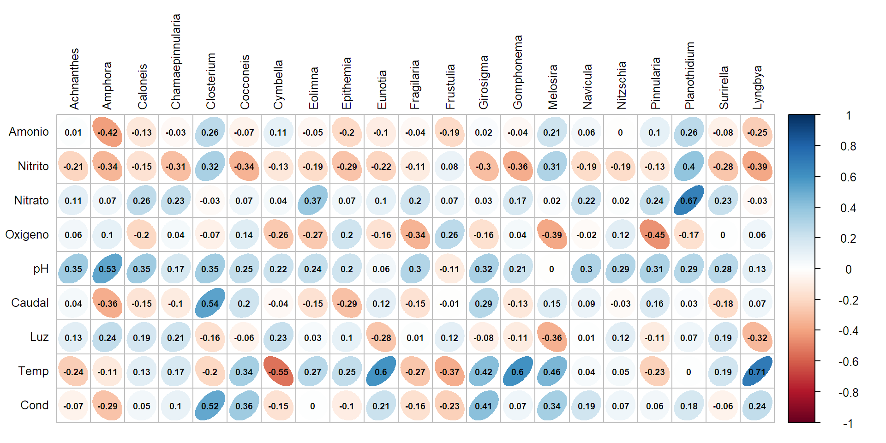

Exploración de datos MV con RStudio
Matriz de datos básica.
Descripción.
La matriz en el archivo de Excel bajo el nombre “Microalgas” hace parte del estudio realizado por Osorio Ávila en el 2013, donde el área de estudio comprendió diferentes sitios de muestreo sobre la cuenca media del Rio Gaira, más específicamente en La Hacienda la Victoria donde existen grandes extensiones de cultivos de diversas variedades de café. Las muestras se tomaron en 3 tributarios definidos de acuerdo con el grado de intervención antrópica: El primer tributario se ubicó en la parte baja de la Hacienda a unos 900 msnm y constituye una zona de alta intervención antrópica debido a la tala y quema del bosque con fines de adecuación de la zona para el cultivo de café; el segundo tributario se ubicó cerca de la parte alta de la hacienda, a unos 1100 msnm expuesto a la entrada de sustancias químicas como pesticidas y nutrientes; y el tercer tributario se ubicó en la parte más alta de la hacienda, a unos 1200 msnm y presenta poca intervención antrópica (tributario control). Para cada muestra se midieron 9 parámetros fisicoquímicos y se registro la abundancia de 21 géneros de microalgas.
Variables.
Tabla 1. Descripción de las variables.
| Variables | Descripción |
|---|---|
| Amonio | Niveles medio en μg/L |
| Nitrito | Niveles medio en μg/L |
| Nitrato | Niveles medios en μg/L |
| Oxigeno | Niveles medio de oxígeno disuelto en mg/L |
| pH | Nivel medio en unidades de pH |
| Caudal | Nivel medio en m3/s |
| Luz | Cantidad media en lux. |
| Temp | Temperatura media del agua en °C |
| Cond | Conductividad eléctrica media en µS/cm |
| Género | N° de individuos |
Exploración MV.
Librerías requeridas.
Importar los datos.
tibble [24 × 31] (S3: tbl_df/tbl/data.frame)
$ Tributario : Factor w/ 3 levels "1","2","3": 1 1 1 1 1 1 1 1 2 2 ...
$ Amonio : num [1:24] 0.301 0.301 1.107 1.024 0.194 ...
$ Nitrito : num [1:24] 0.838 0.779 1.176 0.882 0.147 ...
$ Nitrato : num [1:24] 0.901 0.825 3.429 2.67 0.524 ...
$ Oxigeno : num [1:24] 7.68 6.54 5.62 6.08 5.1 5.6 7.69 7.9 6.9 5.93 ...
$ pH : num [1:24] 8.1 7.45 7.81 9.21 9.24 9.63 6.6 7.1 6.64 6.43 ...
$ Caudal : num [1:24] 0.51 1.59 1.48 1.24 1.32 ...
$ Luz : num [1:24] 800 400 300 100 800 200 4400 2300 3800 4700 ...
$ Temp : num [1:24] 17.6 18.3 17.1 18.6 17.9 17.8 19 18.2 17.2 17.6 ...
$ Cond : num [1:24] 76 76 76 76 76 77 76 77 43 43 ...
$ Achnanthes : num [1:24] 0 0 0 1 5 6 7 0 0 0 ...
$ Amphora : num [1:24] 4 3 0 2 9 10 7 5 8 2 ...
$ Caloneis : num [1:24] 0 0 0 7 12 28 33 18 0 0 ...
$ Chamaepinnularia: num [1:24] 2 1 10 19 40 29 59 45 0 2 ...
$ Closterium : num [1:24] 10 11 8 4 6 3 3 0 0 0 ...
$ Cocconeis : num [1:24] 9 19 26 30 158 157 222 202 18 10 ...
$ Cymbella : num [1:24] 0 0 0 0 0 0 0 0 0 0 ...
$ Eolimna : num [1:24] 14 24 24 24 70 62 81 61 4 8 ...
$ Epithemia : num [1:24] 0 0 0 1 4 5 6 4 0 2 ...
$ Eunotia : num [1:24] 0 6 2 0 9 7 7 2 0 0 ...
$ Fragilaria : num [1:24] 0 2 27 35 66 50 44 39 6 23 ...
$ Frustulia : num [1:24] 0 6 3 0 0 0 4 0 2 0 ...
$ Girosigma : num [1:24] 0 0 0 8 20 13 14 13 0 0 ...
$ Gomphonema : num [1:24] 0 0 2 11 33 29 38 24 2 3 ...
$ Melosira : num [1:24] 72 52 6 16 17 27 6 5 6 8 ...
$ Navicula : num [1:24] 50 53 59 86 149 194 203 151 6 15 ...
$ Nitzschia : num [1:24] 0 9 3 15 34 33 39 32 0 20 ...
$ Pinnularia : num [1:24] 11 18 33 40 52 36 39 38 18 6 ...
$ Planothidium : num [1:24] 12 8 12 14 11 6 20 7 6 3 ...
$ Surirella : num [1:24] 4 6 24 40 98 79 185 69 6 10 ...
$ Lyngbya : num [1:24] 2 0 0 5 30 29 28 32 2 0 ...Métodos de descripción numérica.
1. Descripción de una variable cuantitativa por grupo.
# A tibble: 3 × 6
Tributario M SD Mdn Q1 Q3
<fct> <dbl> <dbl> <dbl> <dbl> <dbl>
1 1 0.648 0.639 0.301 0.203 1.04
2 2 0.917 2.02 0.141 0.0847 0.414
3 3 0.486 0.813 0.171 0.138 0.3282. Descripción de varias variables cuantitativas por grupo.
$`1`
n Mean Std.Dev Median Min Max 25th 75th
Amonio 8 0.6475118 0.6386418 0.3009479 0.1350711 1.912322 0.2031991 1.0444313
Nitrito 8 0.6397059 0.3355299 0.6250000 0.1470588 1.176471 0.4411765 0.8492647
Nitrato 8 1.5953750 1.1775931 0.8980000 0.5240000 3.429000 0.7835000 2.7175000
Oxigeno 8 6.5262500 1.1009987 6.3100000 5.1000000 7.900000 5.6150000 7.6825000
Skew Kurtosis
Amonio 0.8525289 -0.8948451
Nitrito 0.0882455 -1.4642750
Nitrato 0.4778119 -1.8229909
Oxigeno 0.1100799 -1.9149037
$`2`
n Mean Std.Dev Median Min Max 25th
Amonio 8 0.9170616 2.0245464 0.1409953 0.02843602 5.9052133 0.08471564
Nitrito 8 0.4724265 0.1756700 0.4632353 0.29411765 0.8382353 0.34191176
Nitrato 8 1.1457500 1.0071771 0.9755000 0.38600000 3.5410000 0.62075000
Oxigeno 8 6.4337500 0.9232387 6.3200000 4.98000000 7.6000000 5.90250000
75th Skew Kurtosis
Amonio 0.4135071 1.82410118 1.6245348
Nitrito 0.5147059 0.87238089 -0.3886437
Nitrato 1.0802500 1.57012803 1.0758660
Oxigeno 7.0750000 -0.03953277 -1.5420557
$`3`
n Mean Std.Dev Median Min Max 25th
Amonio 8 0.4860782 0.8127981 0.1706161 0.09952607 2.4810427 0.1380332
Nitrito 8 0.4926471 0.1272353 0.4852941 0.35294118 0.6764706 0.3786765
Nitrato 8 1.5806250 1.6458588 0.8155000 0.61100000 5.2420000 0.7270000
Oxigeno 8 6.8512500 1.0481063 6.8650000 4.96000000 8.1600000 6.3275000
75th Skew Kurtosis
Amonio 0.3276066 1.7972364 1.5583875
Nitrito 0.5919118 0.1314339 -1.9467135
Nitrato 1.3782500 1.3331346 0.1493853
Oxigeno 7.6425000 -0.3919184 -1.2165765Métodos de descripción gráfica.
Visualizar composición.
Gráfico de Barras.
Gráfico de Barras.

Gráfico de mosaico.
Gráfico de mosaico.

Visualizar y comparar distribuciones.
Histogramas.
Histogramas.

Densidades.
Densidades.

Cajas y bigotes.
ggplot(A, aes (x=Tributario, y = pH, fill=Tributario)) +
stat_boxplot(geom = "errorbar", position = "dodge",width=0.1)+
geom_boxplot(notch = TRUE, width= 0.5, outlier.color = "red") +
stat_summary(fun = mean, geom = "point",
position=position_dodge(width=.75),
color = "black",shape=4)+
labs(x = "Tributario", y="pH")+
scale_fill_brewer(palette = "PiYG")+
theme_classic()+theme(legend.position = "none")Cajas y bigotes.

Barras de medias.
ggplot(data = melt(A[,1:4] %>% data.frame()),
mapping = aes(x = variable,y=value,fill=Tributario))+
stat_summary(fun.data=mean_se,geom="errorbar",
width=0.2,colour="black",
position = position_dodge(width = 0.7))+
stat_summary(fun=mean,geom="bar",color="black",
width=0.7,position = position_dodge())+
theme_classic()+ theme(legend.position = "top")+
labs(x = " ", y="concentración (μg/L)")Barras de medias.

Visualizar relaciones.
Gráfico de dispersión - relaciones no lineales.
Gráfico de dispersión - relaciones no lineales.

Gráfico de dispersión - relaciones lineales.
ggplot(A,aes(x=Oxigeno,y=Caloneis,fill=Tributario,))+
geom_point(pch=21,cex=3,colour="black")+
geom_smooth(formula = y~x,method = "lm",se = FALSE,
span=2,aes(color=Tributario))+
stat_regline_equation(aes(
label = paste(..eq.label.., ..adj.rr.label..,
sep = "~~~~~"),color=Tributario),
label.x = c(5,5,5), label.y = c(50,45,40),size=3)+
labs(x="Niveles medio de oxígeno disuelto (mg/L)",
y="Caloneis (N° de individuos)")+ylim(c(0,52))+
theme_classic()+theme(legend.position = "top")Gráfico de dispersión - relaciones lineales.

Matriz de dispersión - Gráfico de pares.
Matriz de dispersión - Gráfico de pares.

Matriz de correlaciones lineales - Correlograma.
Matriz de correlaciones lineales - Correlograma.

Verificación de supuestos MV.
Librerías requeridas.
Normalidad univariante.
Test Variable Statistic p value Normality
1 Shapiro-Wilk Amonio 0.5194 <0.001 NO
2 Shapiro-Wilk Nitrito 0.9295 0.095 YES
3 Shapiro-Wilk Nitrato 0.7245 <0.001 NO
4 Shapiro-Wilk Oxigeno 0.9378 0.1457 YES
5 Shapiro-Wilk pH 0.9658 0.565 YES
6 Shapiro-Wilk Caudal 0.8440 0.0017 NO
7 Shapiro-Wilk Luz 0.4298 <0.001 NO
8 Shapiro-Wilk Temp 0.9099 0.0351 NO
9 Shapiro-Wilk Cond 0.6544 <0.001 NO
10 Shapiro-Wilk Achnanthes 0.8318 0.001 NO
11 Shapiro-Wilk Amphora 0.9295 0.0952 YES
12 Shapiro-Wilk Caloneis 0.9014 0.0231 NO
13 Shapiro-Wilk Chamaepinnularia 0.9136 0.0422 NO
14 Shapiro-Wilk Closterium 0.7942 2e-04 NO
15 Shapiro-Wilk Cocconeis 0.8964 0.018 NO
16 Shapiro-Wilk Cymbella 0.5410 <0.001 NO
17 Shapiro-Wilk Eolimna 0.9192 0.056 YES
18 Shapiro-Wilk Epithemia 0.7931 2e-04 NO
19 Shapiro-Wilk Eunotia 0.7471 <0.001 NO
20 Shapiro-Wilk Fragilaria 0.9557 0.3577 YES
21 Shapiro-Wilk Frustulia 0.8025 3e-04 NO
22 Shapiro-Wilk Girosigma 0.7341 <0.001 NO
23 Shapiro-Wilk Gomphonema 0.8230 7e-04 NO
24 Shapiro-Wilk Melosira 0.7176 <0.001 NO
25 Shapiro-Wilk Navicula 0.9096 0.0345 NO
26 Shapiro-Wilk Nitzschia 0.9539 0.3285 YES
27 Shapiro-Wilk Pinnularia 0.9580 0.3999 YES
28 Shapiro-Wilk Planothidium 0.9633 0.5086 YES
29 Shapiro-Wilk Surirella 0.9125 0.0401 NO
30 Shapiro-Wilk Lyngbya 0.7023 <0.001 NO Normalidad multivariante.
Test Statistic p value Result
1 Mardia Skewness 36665.5282943881 0 NO
2 Mardia Kurtosis -6.831628583652 8.39550651221543e-12 NO
3 MVN <NA> <NA> NOHomocedasticidad multivariante.
Box's M-test for Homogeneity of Covariance Matrices
data: A[, 2:7]
Chi-Sq (approx.) = 89.356, df = 42, p-value = 2.869e-05Multicolinealidad y variables correladas.
var1 var2 cor p
1 Amonio Nitrito 0.41 4.84e-02
2 Nitrito Amonio 0.41 4.84e-02
3 Nitrito Nitrato 0.51 1.18e-02
4 Nitrato Nitrito 0.51 1.18e-02
5 Caudal Cond 0.78 5.80e-06
6 Cond Caudal 0.78 5.80e-06Multicolinealidad y variables correladas.
$chisq
[1] 62.41728
$p.value
[1] 0.004086217
$df
[1] 36Datos atípicos multivariante.
mahal.dist is.outlier qchisq
1 4.367 FALSE 24.3219
2 6.405 FALSE 24.3219
3 9.316 FALSE 24.3219
4 5.391 FALSE 24.3219
5 10.143 FALSE 24.3219
6 5.586 FALSE 24.3219
7 7.471 FALSE 24.3219
8 5.982 FALSE 24.3219
9 6.300 FALSE 24.3219
10 20.928 FALSE 24.3219
11 1.495 FALSE 24.3219
12 2.556 FALSE 24.3219
13 10.347 FALSE 24.3219
14 3.240 FALSE 24.3219
15 2.441 FALSE 24.3219
16 1.998 FALSE 24.3219
17 13.116 FALSE 24.3219
18 3.351 FALSE 24.3219
19 13.999 FALSE 24.3219
20 3.358 FALSE 24.3219
21 13.527 FALSE 24.3219
22 1.481 FALSE 24.3219
23 4.268 FALSE 24.3219
24 3.933 FALSE 24.3219